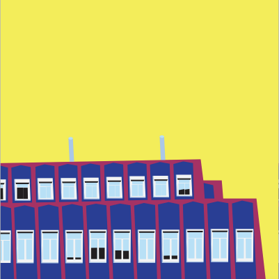
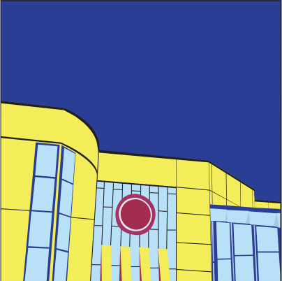
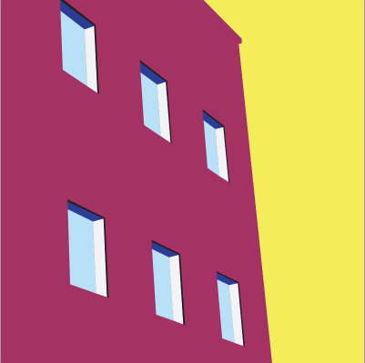
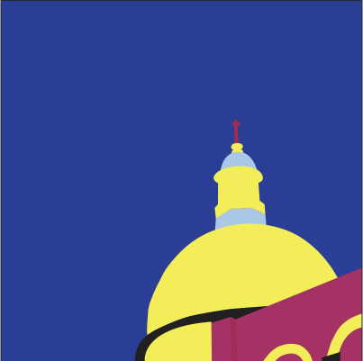
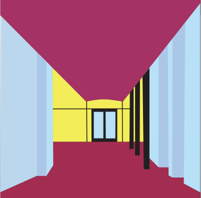
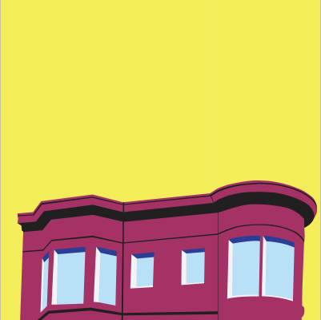
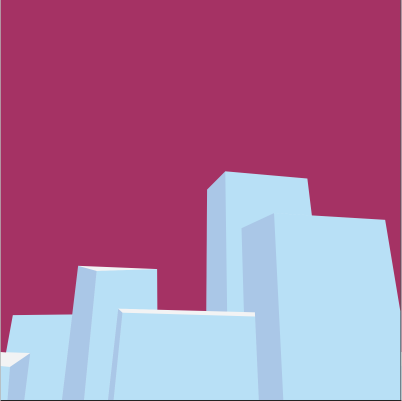
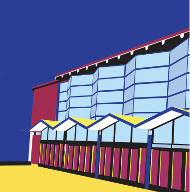
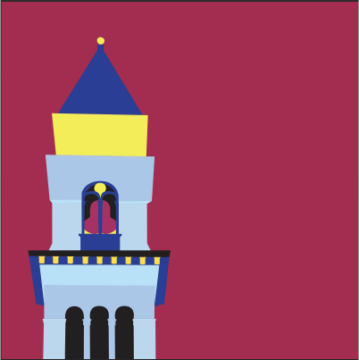

“Architecture” is an illustration of the USF campus which heavily focuses on its unique architecture. It’s made up of nine squares, creating a grid composition, to showcase different buildings and structures. The overall piece conveys feelings of balance and clean by maintaining unity in form and abstraction.